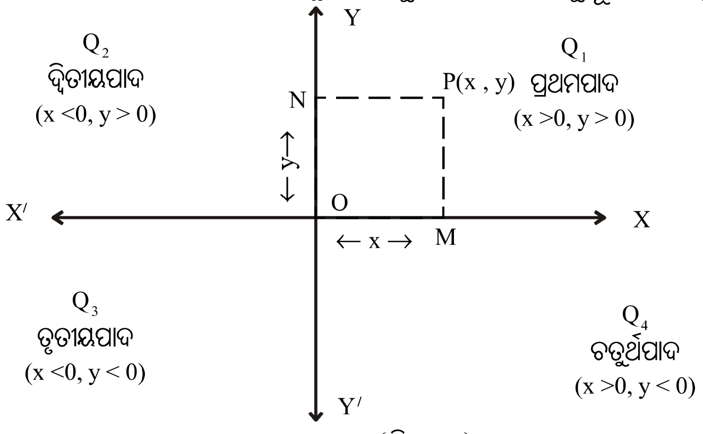
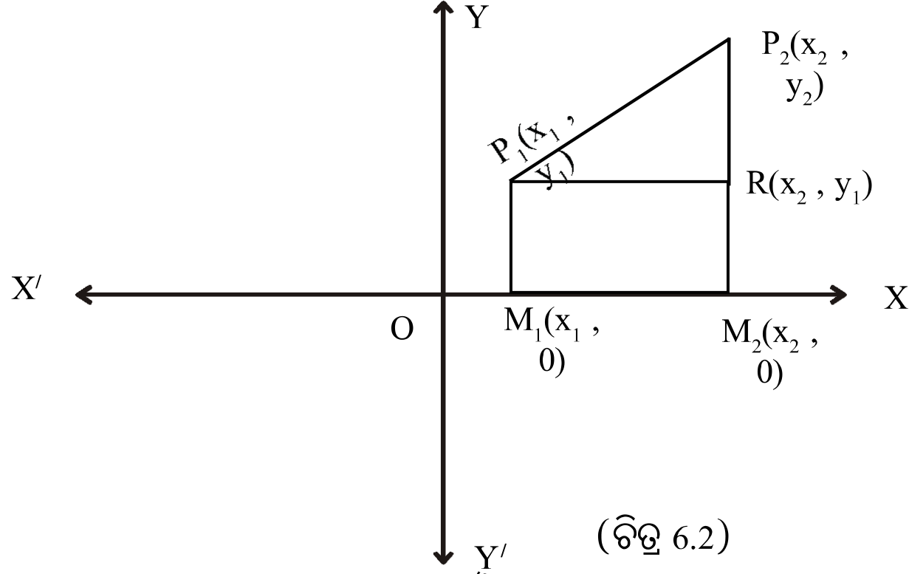
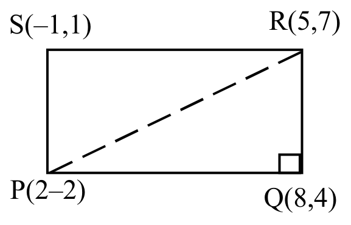
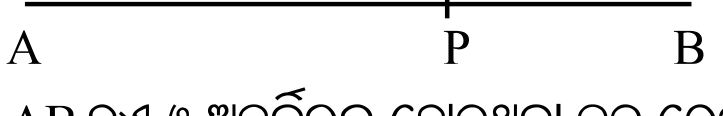
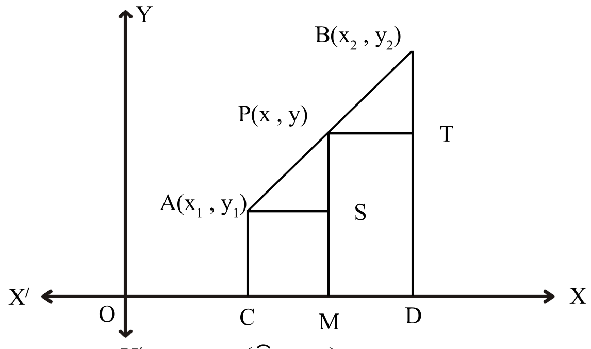
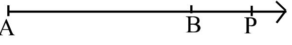
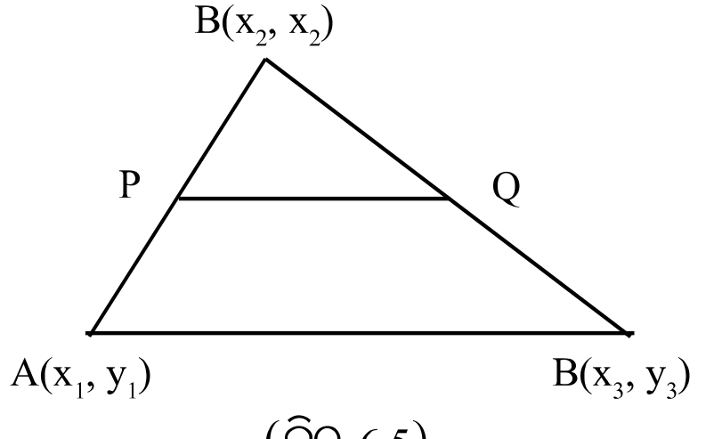
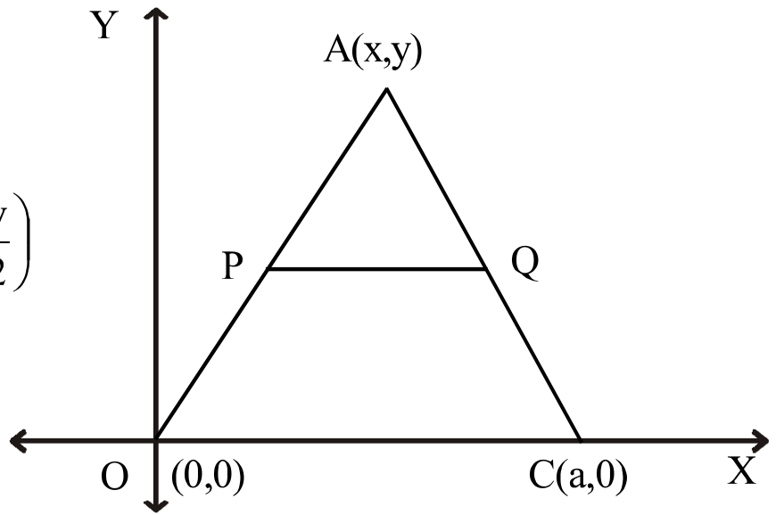
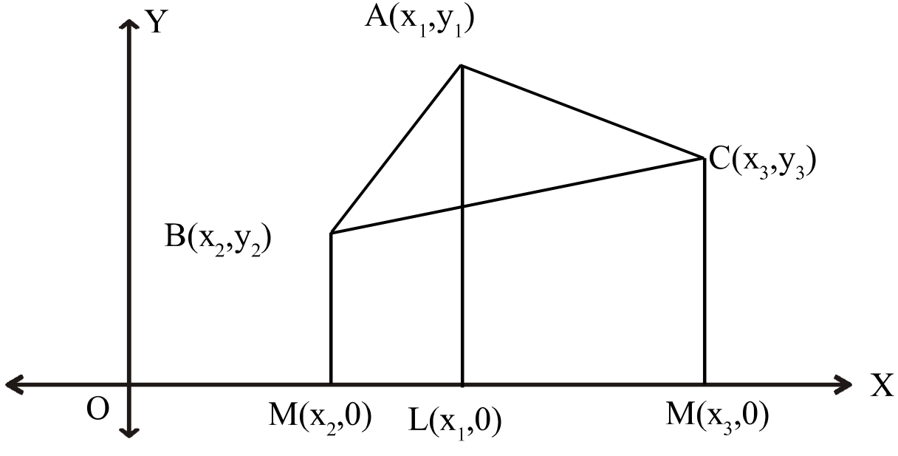
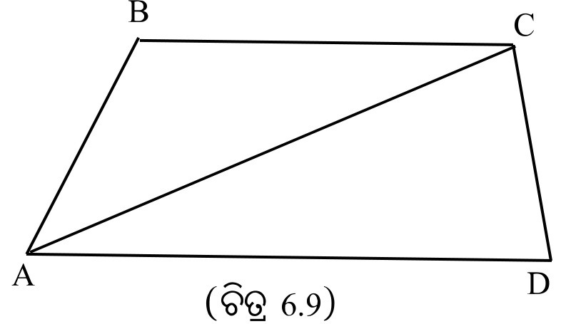

6.1 ଉପକ୍ରମଣିକା Introduction ନବମ ଶ୍ରେଣୀରେ ସ୍ଥାନାଙ୍କ ସମତଳ ଏବଂ ଉକ୍ତ ସମତଳରେ ବିନ୍ଦୁସ୍ଥାପନ, ସରଳରେଖାର ସ୍ଲୋପ୍ ନିର୍ଣ୍ଣୟ, ସ୍ଥାନାଙ୍କ ଜ୍ୟାମିତି ସାହାଯ୍ୟରେ ସରଳରେଖାର ସମୀକରଣ ନିରୂପଣ ଏବଂ ଦୁଇଅଜ୍ଞାତ ବିଶିଷ୍ଟ ଏକଘାତୀ ସମୀକରଣର ଲେଖଚିତ୍ର ଅଙ୍କନ ସମ୍ବନ୍ଧରେ ତୁମେମାନେ ଅବଗତ ଅଛ । ବର୍ତ୍ତମାନ ଉକ୍ତ ଅଧ୍ୟାୟରେ ତୁମେମାନେ ସ୍ଥାନାଙ୍କ ସମତଳରେ ନିରୂପିତ ଦୁଇ ଦତ୍ତ ବିନ୍ଦୁ ମଧ୍ୟରେ ଦୂରତା, ଏକ ରେଖାଖଣ୍ଡର ଅର୍ନ୍ତବିଭାଜନ ସୂତ୍ର ଏବଂ ସ୍ଥାନଙ୍କ ଜ୍ୟାମିତି ସାହାଯ୍ୟରେ ତ୍ରିଭୁଜର କ୍ଷେତ୍ରଫଳ ନିଣ୍ଣୟ ର ସୂତ୍ର ସମ୍ବନ୍ଧରେ ଜାଣିବ । ଉକ୍ତ ସୂତ୍ର ଗୁଡ଼ିକର ସଫଳ ପ୍ରୟୋଗ କରି କଠିନ ଜ୍ୟାମିତିକ ପ୍ରଶ୍ନ ଗୁଡ଼ିକର ସମାଧାନ କରିବାରେ ସମର୍ଥ ମଧ୍ୟ ହୋଇ ପାରିବ ।
6.2 କାର୍ଟେଜୀୟ ସମତଳ ଓ କାର୍ଟେଜୀୟ ସ୍ଥାନାଙ୍କ Cartesian plane and Cartesian co-ordinates ବୀଜଗଣିତରେ ଆମେ ସଂଖ୍ୟାରେଖା ସମ୍ବନ୍ଧରେ ଆଲୋଚନା କରିଛେ । ସେଥିରୁ ଆମେ ଜାଣିଛେ ଯେ କୌଣସି ବାସ୍ତବ ସଂଖ୍ୟା ଏକ ସରଳରେଖା ଉପରେ ଗୋଟିଏ ବିନ୍ଦୁଦ୍ୱାରା ସୂଚିତ ହୋଇପାରିବ ଏବଂ ବିପରୀତକ୍ରମେ ସରଳରେଖାର ପ୍ରତ୍ୟେକ ବିନ୍ଦୁ ଏକ ବାସ୍ତବ ସଂଖ୍ୟାଦ୍ୱାରା ସୂଚିତ ହୋଇପାରିବ । କିନ୍ତୁ ଉକ୍ତ ସରଳରେଖାର ବାହାରେ, ସମତଳ ଉପରେ ଅବସ୍ଥିତ କୌଣସି ବିନ୍ଦୁକୁ ଗୋଟିଏ ସଂଖ୍ୟା ସାହାଯ୍ୟରେ ସୂଚିତ କରାଯାଇପାରିବ ନାହିଁ । ଏହିପରି ଅବସ୍ଥିତ ବିନ୍ଦୁମାନଙ୍କ ପାଇଁ ଆମେ ନିମ୍ନ ପଦ୍ଧତି ଅବଲମ୍ବନ କରିପାରିବା ।
ମନେକର କାଗଜର ଉପର ପୃଷ୍ଠତଳ ଆମର ଆଲୋଚ୍ୟ ସମତଳ ଓ ଏହି ସମତଳ ଉପରସ୍ଥ ଏକ ବିନ୍ଦୁ P ର ଅବସ୍ଥିତି ଆମେ ନିରୂପଣ କରିବା (ଚିତ୍ର 6.1) । ଏଠାରେ ଆମେ ଦୁଇଗୋଟି ସଂଖ୍ୟାରେଖା $\overleftrightarrow{X'OX}$ ଓ $\overleftrightarrow{Y'OY}$ ନେବା ଯେପରିକି ସେମାନେ ସମକୋଣରେ ପରସ୍ପରକୁ O ବିନ୍ଦୁରେ ଛେଦ କରିବେ । $\overleftrightarrow{X'OX}$ ଓ $\overleftrightarrow{Y'OY}$ ସଂଖ୍ୟାରେଖାଦ୍ୱୟକୁ ଯଥାକ୍ରମେ x- ଅକ୍ଷ (x-axis) ଓ y- ଅକ୍ଷ (y-axis) କୁହାଯାଏ ଏବଂ O ବିନ୍ଦୁକୁ ମୂଳବିନ୍ଦୁ (Origin) କୁହାଯାଏ । ଯେହେତୁ ଏହି ସମତଳଟି ଦୁଇଟି ବାସ୍ତବ ସରଳରେଖା ଦ୍ୱାରା ସୂଚିତ ହୁଏ, ତେଣୁ ଏହାକୁ R x R ବା $R^2$- ସମତଳ ($R^2$-Plane) ମଧ୍ୟ କୁହାଯାଏ । ଏହି ଅକ୍ଷଦ୍ୱୟ $R^2$- ସମତଳକୁ ଚାରିଭାଗରେ ବିଭକ୍ତ କରେ । ପ୍ରତ୍ୟେକ ଭାଗକୁ ପାଦ (Quadrant) କୁହାଯାଏ । ପ୍ରଥା ଅନୁସାରେ XOY ପାଦକୁ ପ୍ରଥମପାଦ (first quadrant, $Q_1$), YOX' କୁ ଦ୍ୱିତୀୟପାଦ (Second quadrant, $Q_2$) X'OY' କୁ ତୃତୀୟପାଦ (third quadrant, $Q_3$) ଓ Y'OX କୁ ଚତୁର୍ଥପାଦ (Fourth quadrant, $Q_4$) କୁହାଯାଏ ।
ବର୍ତ୍ତମାନ ସମତଳରେ ଅବସ୍ଥିତ P ବିନ୍ଦୁର ସ୍ଥାନାଙ୍କ ନିର୍ଣ୍ଣୟ କରିବା । P ବିନ୍ଦୁରୁ x- ଅକ୍ଷ ପ୍ରତି $\overline{PM}$ ଲମ୍ବ ଓ y- ଅକ୍ଷ ପ୍ରତି $\overline{PN}$ ଲମ୍ବ ଅଙ୍କନ କର । ଯଦି x – ଅକ୍ଷରେ ଅବସ୍ଥିତ M ବିନ୍ଦୁ ବାସ୍ତବ ସଂଖ୍ୟା x କୁ ସୂଚାଏ ଏବଂ y– ଅକ୍ଷରେ ଅବସ୍ଥିତ

(ଚିତ୍ର 6.1) N ବିନ୍ଦୁ ବାସ୍ତବ ସଂଖ୍ୟା y କୁ ସୂଚାଏ, ଅର୍ଥାତ୍ OM = NP = | x | ଏବଂ ON = MP = | y |, ତେବେ ଆମେ P ବିନ୍ଦୁକୁ ଦୁଇଟି କ୍ରମିତ ଯୋଡ଼ି (ordered pair) (x,y) ଦ୍ୱାରା ସୂଚିତ କରିପାରିବା ଏବଂ ଲେଖିଲାବେଳେ ଆମେ ଏହାକୁ P(x, y) ହିସାବରେ ଲେଖିବା । ।
ବାସ୍ତବ ସଂଖ୍ୟା x କୁ P ବିନ୍ଦୁର x- ସ୍ଥାନାଙ୍କ (x-co-ordinate) ବା ଭୁଜ (abscissa) ଏବଂ ବାସ୍ତବ ସଂଖ୍ୟା y କୁ P ବିନ୍ଦୁର y ସ୍ଥାନାଙ୍କ (y-coordinate) ବା କୋଟି (ordinate) ବୋଲି କୁହାଯାଏ । P ବିନ୍ଦୁର ସ୍ଥାନାଙ୍କ ଦ୍ୱୟ ଗୋଟିଏ ନିର୍ଦ୍ଦିଷ୍ଟ କ୍ରମରେ (ପ୍ରଥମେ x ଓ ପରେ y) ଆବଦ୍ଧ ହେଉଥିବାରୁ ଏହାକୁ ଏକ କ୍ରମିତ ସଂଖ୍ୟାଯୋଡ଼ି (ordered pair) ବୋଲି କୁହାଯାଏ । ତେଣୁ କୌଣସି ବିନ୍ଦୁର ସ୍ଥାନାଙ୍କର ପ୍ରଥମ ସଂଖ୍ୟାଟି x-ସ୍ଥାନାଙ୍କ ଓ ଦ୍ୱିତୀୟ ସଂଖ୍ୟାଟି y- ସ୍ଥାନାଙ୍କକୁ ବୁଝାଏ । ସର୍ବପ୍ରଥମେ ସ୍ଥାନାଙ୍କ ଦ୍ୱାରା ଚିହ୍ନିତ କରାଯାଇଥିବା ସ୍ଥାନାଙ୍କ ଜ୍ୟାମିତିର ଜନକ ଡେକାର୍ଟେଙ୍କ ନାନାନୁସାରେ P ବିନ୍ଦୁର ଏହି ସ୍ଥାନାଙ୍କକୁ କାର୍ଟେଜୀୟ ସ୍ଥାନାଙ୍କ (Cartesian co-ordinates) କୁହାଯାଏ । ବିନ୍ଦୁଟି ଯେଉଁ ସମତଳରେ ଅବସ୍ଥିତ, ସେ ସମତଳକୁ କାର୍ଟେଜୀୟ ସମତଳ (Cartesian plane) କୁହାଯାଏ ।
ସମତଳଟି ଅସଂଖ୍ୟ ବିନ୍ଦୁମାନଙ୍କର ସେଟ୍ । ସ୍ଥାନାଙ୍କ ସମତଳରେ ପ୍ରତ୍ୟେକ ବିନ୍ଦୁପାଇଁ ଏକ କ୍ରମିତ ସଂଖ୍ୟାଯୋଡ଼ି ରହିଛି । ତେଣୁ ସେଟ୍ ଭାଷାରେ ସମତଳକୁ ଲେଖିପାରିବା :
\text{ସମତଳ} = \{(x, y) \mid x, y \in R\}
ତୁମେ ନବମ ଶ୍ରେଣୀ ପୁସ୍ତକରେ ପଢ଼ିଛ, $(x, y) \in R \times R$ ବା $(x, y) \in R^2$
ତେଣୁ ଏହି ସ୍ଥାନାଙ୍କ ସମତଳକୁ $R^2$- ସମତଳ ($R^2$-plane) ବା କାର୍ଟେଜୀୟ ସମତଳ (Cartesian Plane) ମଧ୍ୟ କୁହାଯାଏ ।
A×B ର ସଂଜ୍ଞା $A \times B = \{(a, b) \mid a \in A, b \in B\}$ ଅଟେ । ଉଦାହରଣ ସ୍ୱରୂପ $A = \{1, 2, 3\}$, $B = \{3, 4\}$ ହେଲେ $A \times B = \{(1,3)(1,4)(2,3)(2,4)(3,3),(3,4)\}$ ।
ସେହିପରି $B \times A = \{(b,a) \mid a \in A, b \in B\}$ ଏବଂ $B \times A = (3,1),(3,2),(3,3), (4,1), (4,2), (4,3)$
ଯଦି A = B = R (ବାସ୍ତବ ସଂଖ୍ୟା ସେଟ) ତେବେ କାର୍ଟେଜୀୟ ଗୁଣଫଳ ସେଟ୍
$R \times R = \{(x, y) \mid x, y \in R\}$ ଓ ଏହାକୁ $R^2$ ରୂପେ ମଧ୍ୟ ଲେଖାଯାଏ ।
ଉକ୍ତ ସମତଳରେ ଅବସ୍ଥିତ ଯେକୌଣସି ଏକ ବିନ୍ଦୁର ସ୍ଥାନାଙ୍କ ସମ୍ବନ୍ଧରେ ଆମେ ବର୍ତ୍ତମାନ ବିସ୍ତୃତ ଆଲୋଚନା କରିବା । $\overleftrightarrow{X'OX}$ ଅକ୍ଷର $\overrightarrow{OX}$ କୁ x- ଅକ୍ଷର ଧନଦିଗ, $\overrightarrow{OX'}$ କୁ ଋଣଦିଗ କୁହାଯାଏ । ସେହିପରି $\overrightarrow{OY}$ ଏବଂ $\overrightarrow{OY'}$ କୁ $\overleftrightarrow{Y'OY}$ ଅକ୍ଷର ଯଥାକ୍ରମେ ଧନଦିଗ ଓ ଋଣଦିଗ ଭାବେ ନିଆଯାଇଥାଏ ।
ପ୍ରଥମେ x- ଅକ୍ଷରେ ଅବସ୍ଥିତ ଯେକୌଣସି ଏକ ବିନ୍ଦୁ M (ଚିତ୍ର 6.1) ର ସ୍ଥାନାଙ୍କ ନିର୍ଣ୍ଣୟ କରାଯାଉ । ଏହାର x- ସ୍ଥାନାଙ୍କ x ଏବଂ y- ସ୍ଥାନାଙ୍କ ଶୂନ । କାରଣ x- ଅକ୍ଷଠାରୁ $\overrightarrow{OY}$ ବା $\overrightarrow{OY'}$ ଦିଗରେ M ବିନ୍ଦୁର ଦୂରତା ଶୂନ ହୋଇଥିବାରୁ ଏହାର y- ସ୍ଥାନାଙ୍କ ଶୂନ ।
(i) ତେଣୁ x- ଅକ୍ଷ ଉପରେ ଅବସ୍ଥିତ ଯେ କୌଣସି ବିନ୍ଦୁର ସ୍ଥାନାଙ୍କ (x, 0) ଅର୍ଥାତ୍ x- ଅକ୍ଷର ପ୍ରତ୍ୟେକ ବିନ୍ଦୁର y- ସ୍ଥାନାଙ୍କ = 0 ।
(ii) ସେହିପରି y- ଅକ୍ଷର ଯେକୌଣସି ବିନ୍ଦୁର ସ୍ଥାନାଙ୍କ (0, y) ଅର୍ଥାତ୍ y- ଅକ୍ଷର ପ୍ରତ୍ୟେକ ବିନ୍ଦୁର x ସ୍ଥାନାଙ୍କ 0 ।
(iii) ମୂଳବିନ୍ଦୁ O ଉଭୟ ଅକ୍ଷର ପରସ୍ପର ଛେଦବିନ୍ଦୁରେ ଥିବାରୁ ଏହାର ସ୍ଥାନାଙ୍କ (0, 0) ଅଟେ ।
(iv) (a) ପ୍ରଥମ ପାଦରେ ଅବସ୍ଥିତ ଯେ କୌଣସି ବିନ୍ଦୁର ସ୍ଥାନାଙ୍କ (x, y) ପାଇଁ $x > 0, y > 0$, ଅର୍ଥାତ୍ x ଓ y ଉଭୟେ ଧନାତ୍ମକ ।
(v) ଅକ୍ଷଦ୍ୱୟ ଉପରିସ୍ଥ ଯେ କୌଣସି ବିନ୍ଦୁ କୌଣସି ପାଦରେ ଅନ୍ତର୍ଭୁକ୍ତ ନୁହଁନ୍ତି ।
(vi) x- ଅକ୍ଷର ପ୍ରତ୍ୟେକ ବିନ୍ଦୁର y- ସ୍ଥାନାଙ୍କ 0 ହେତୁ x- ଅକ୍ଷର ସମୀକରଣ ହେଉଛି $y = 0$ । ସେହିପରି y- ଅକ୍ଷର ପ୍ରତ୍ୟେକ ବିନ୍ଦୁର x- ସ୍ଥାନାଙ୍କ 0 ହେତୁ y- ଅକ୍ଷର ସମୀକରଣ ହେଉଛି $x = 0$ ।
6.3 ଦୁଇଟି ଦତ୍ତ ବିନ୍ଦୁ ମଧ୍ୟରେ ଦୂରତା Distance between two given points ଉପପାଦ୍ୟ – 1 ସ୍ଥାନାଙ୍କ ସମତଳରେ $P_1(x_1, y_1)$ ଓ $P_2(x_2, y_2)$ ଦୁଇଟି ଦତ୍ତ ବିନ୍ଦୁ ହେଲେ, ସେମାନଙ୍କ ଦୂରତା
P_1P_2 = \sqrt{(x_2 - x_1)^2 + (y_2 - y_1)^2}
ଦତ୍ତ : ସ୍ଥାନାଙ୍କ ସମତଳରେ $P_1(x_1, y_1)$ ଏବଂ $P_2(x_2, y_2)$ ଦୁଇଟି ବିନ୍ଦୁ ।
\text{ପ୍ରାମାଣ୍ୟ :} \quad P_1P_2 = \sqrt{(x_2 - x_1)^2 + (y_2 - y_1)^2}
ଅଙ୍କନ : ଏକ ସମତଳରେ $P_1$ ଓ $P_2$ ଦୁଇଟି ବୁନ୍ଦୁ (ଚିତ୍ର 6.2) । ସେମାନଙ୍କର ସ୍ଥାନାଙ୍କ ଯଥାକ୍ରମେ $(x_1, y_1)$ ଓ $(x_2, y_2)$ । $\overline{P_1P_2}$ ରେଖାଖଣ୍ଡ ଅଙ୍କନ କର । $P_1$ ଓ $P_2$ ବିନ୍ଦୁଦ୍ୱୟରୁ x-ଅକ୍ଷ ପ୍ରତି ଯଥାକ୍ରମେ $\overline{P_1M_1}$ ଓ $\overline{P_2M_2}$ ଲମ୍ବ ଅଙ୍କନ କର । ପୁନଶ୍ଚ, $P_1$ ବିନ୍ଦୁରୁ $\overline{P_2M_2}$ ପ୍ରତି x-ଅକ୍ଷ ସହ ସମାନ୍ତର କରି $\overline{P_1R}$ ରେଖାଖଣ୍ଡ ଅଙ୍କନ କର ।

(ଚିତ୍ର 6.2) \text{ପ୍ରମାଣ :} \quad OM_1 = x_1, OM_2 = x_2, M_1P_1 = y_1 \text{ ଓ } M_2P_2 = y_2
\text{ତେଣୁ } P_1R = M_1M_2 = OM_2 - OM_1 = x_2 - x_1
\text{ଏବଂ } RP_2 = M_2P_2 - M_2R = M_2P_2 - M_1P_1 = y_2 - y_1
\text{ଯେହେତୁ } P_1RP_2\ \Delta \text{ ରେ } m\angle P_1RP_2 = 90^0, \text{ ତେଣୁ ପିଥାଗୋରାସ୍ ଉପପାଦ୍ୟ ଅନୁସାରେ} \\ (P_1P_2)^2 = (P_1R)^2 + (RP_2)^2 = (x_2 - x_1)^2 + (y_2 - y_1)^2
ଯେହେତୁ ଦୂରତା ଏକ ଧନାତ୍ମକ ସଂଖ୍ୟା,
\text{ତେଣୁ } P_1P_2 = +\sqrt{(x_2 - x_1)^2 + (y_2 - y_1)^2} \quad \text{ଅଥବା} \quad \sqrt{(x_1 - x_2)^2 + (y_1 - y_2)^2}
\boxed{\text{ଦୁଇବିନ୍ଦୁ ମଧ୍ୟରେ ଦୂରତା} = \sqrt{\text{x - ସ୍ଥାନାଙ୍କ ଦ୍ୱୟର ଅନ୍ତରର ବର୍ଗ} + \text{y- ସ୍ଥାନାଙ୍କ ଦ୍ୱୟର ଅନ୍ତରର ବର୍ଗ}}}
ଅନୁସିଦ୍ଧାନ୍ତ – 1 : ମୂଳବିନ୍ଦୁ O (0,0) ରୁ ଯେ କୌଣସି ବିନ୍ଦୁ P(x, y) ର ଦୂରତା $OP = \sqrt{x^2 + y^2}$ ହେବ ।
ଅନୁସିଦ୍ଧାନ୍ତ – 2 : $P_1$, $P_2$ ବିନ୍ଦୁଦ୍ୱୟ x-ଅକ୍ଷ ଉପରେ ଅବସ୍ଥିତ ହେଲେ $P_1P_2 = |x_2 - x_1|$ ଓ y-ଅକ୍ଷ ଉପରେ ଅବସ୍ଥିତ ହେଲେ $P_1P_2 = |y_2 - y_1|$ ହେବ ।
ନିମ୍ନରେ ସମାହିତ ଉଦାହରଣଗୁଡ଼ିକରେ ଦୂରତା ସୂତ୍ରର ପ୍ରୟୋଗ କରାଯାଇଛି ।
ଉଦାହରଣ -1 : P(0, –5) ଓ Q(4, –6) ମଧ୍ୟରେ ଦୂରତା ନିରୂପଣ କର । ସମାଧାନ : ଏଠାରେ $x_1 = 0, y_1 = -5, x_2 = 4, y_2 = -6$
\text{ଅତଏବ } PQ = \sqrt{(x_1 - x_2)^2 + (y_1 - y_2)^2} \\ = \sqrt{(0 - 4)^2 + (-5 - (-6))^2} = \sqrt{(-4)^2 + (-5 + 6)^2} = \sqrt{16 + 1} = \sqrt{17} \quad \text{(ଉତ୍ତର) ।}
ଉଦାହରଣ - 2 : ପ୍ରମାଣ କର ଯେ, A(0,6), B(2,3) ଓ C(4,0) ବିନ୍ଦୁ ତ୍ରୟ ଏକରେଖିୟ । ସମାଧାନ : $AB = \sqrt{(0 - 2)^2 + (6 - 3)^2} = \sqrt{4 + 9} = \sqrt{13}$,
BC = \sqrt{(2 - 4)^2 + (3 - 0)^2} = \sqrt{4 + 9} = \sqrt{13} \text{ ଏବଂ}
AC = \sqrt{(0 - 4)^2 + (6 - 0)^2} = \sqrt{16 + 36} = \sqrt{52} = 2\sqrt{13}
\text{ଏଠାରେ ଲକ୍ଷ୍ୟ କର :} \quad AB + BC = \sqrt{13} + \sqrt{13} = 2\sqrt{13} = AC
ସୁତରାଂ A, B ଓ C ବିନ୍ଦୁ ତ୍ରୟ ଏକ ରେଖୀୟ ଏବଂ A-B-C (ପ୍ରମାଣିତ)
ଉଦାହରଣ -3 : ପ୍ରମାଣ କର ଯେ A(–2,3), B (5, –2), C(3,–4) ବିନ୍ଦୁତ୍ରୟ ଏକ ସମଦ୍ୱିବାହୁ Δ ର ଶୀର୍ଷ ବିନ୍ଦୁ । ସମାଧାନ : A(–2,3), B (5, –2), C(3,–4) ତିନିଗୋଟି ଦତ୍ତ ବିନ୍ଦୁ । ଦୂରତା ସୂତ୍ର ପ୍ରୟୋଗ କଲେ
AB = \sqrt{(-2 - 5)^2 + (3 - (-2))^2} = \sqrt{(-7)^2 + (5)^2} = \sqrt{49 + 25} = \sqrt{74}
CB = \sqrt{(3 - 5)^2 + (-4 - (-2))^2} = \sqrt{(-2)^2 + (-2)^2} = \sqrt{4 + 4} = 2\sqrt{2}
AC = \sqrt{(-2 - 3)^2 + (3 - (-4))^2} = \sqrt{(-5)^2 + (7)^2} = \sqrt{25 + 49} = \sqrt{74}
\text{ଏଠାରେ ଲକ୍ଷ୍ୟ କର :} \quad AB = AC = \sqrt{74}, \Rightarrow \Delta ABC \text{ ସମଦ୍ୱିବାହୁ} \qquad \text{(ପ୍ରମାଣିତ)}
ଉଦାହରଣ - 4 : y -ଅକ୍ଷ ଉପରେ A (6, 5) ଓ B (-4, 3) ବିନ୍ଦୁ ଦ୍ୱୟ ଠାରୁ ସମଦୂରବର୍ତ୍ତୀ ବିନ୍ଦୁଟି ସ୍ଥିର କର । ସମାଧାନ : ମନେକର y -ଅକ୍ଷ ଉପରିସ୍ଥ ଯେ କୌଣସି ବିନ୍ଦୁ P ର ସ୍ଥାନାଙ୍କ (0,y) । ପ୍ରଶ୍ନାନୁଯାୟୀ AP=BP ।
AP = \sqrt{(0 - 6)^2 + (y - 5)^2} \quad \text{ଏବଂ} \quad BP = \sqrt{(-4 - 0)^2 + (3 - y)^2}
\Rightarrow \sqrt{(0 - 6)^2 + (y - 5)^2} = \sqrt{(-4 - 0)^2 + (3 - y)^2} \quad (\because AP = BP)
\Rightarrow \sqrt{36 + (y - 5)^2} = \sqrt{16 + (3 - y)^2} \Rightarrow 36 + y^2 - 10y + 25 = 16 + 9 - 6y + y^2
\Rightarrow 10y - 6y = 36 + 25 - 16 - 9 \Rightarrow 4y = 36 \Rightarrow y = 9
ତେଣୁ A(6,5) ଓ B (–4, 3) ବିନ୍ଦୁଦ୍ୱୟରୁ ସମଦୂରବର୍ତ୍ତୀ y -ଅକ୍ଷ ଉପରିସ୍ଥ ବିନ୍ଦୁଟି P(0,9) ।
ଉଦାହରଣ - 5 : ପ୍ରମାଣ କର ଯେ, A(1,0), B(5,3) ଓ C(4, –4) ବିନ୍ଦୁତ୍ରୟ ଏକ ସମକୋଣୀ ସମଦ୍ୱିବାହୁ ତ୍ରିଭୁଜର ଶୀର୍ଷ । ସମାଧାନ : ଦତ୍ତ ବିନ୍ଦୁତ୍ରୟ A(1,0), B(5,3) ଓ C(4, –4)
\text{ଅତଏବ } AB = \sqrt{(1 - 5)^2 + (0 - 3)^2} = \sqrt{(-4)^2 + (-3)^2} = \sqrt{16 + 9} = \sqrt{25} = 5
BC = \sqrt{(5 - 4)^2 + (3 - (-4))^2} = \sqrt{(1)^2 + (7)^2} = \sqrt{1 + 49} = \sqrt{50} = 5\sqrt{2}
CA = \sqrt{(4 - 1)^2 + (-4 - 0)^2} = \sqrt{(3)^2 + (-4)^2} = \sqrt{9 + 16} = \sqrt{25} = 5
\therefore AB = CA \text{ ଏବଂ ଯେହେତୁ } AB^2 + AC^2 = 5^2 + 5^2 = 50 = BC^2,
\therefore \Delta ABC \text{ ଏକ ସମକୋଣୀ ସମଦ୍ୱିବାହୁ ।} \qquad \text{(ପ୍ରମାଣିତ) ।}
ଉଦାହରଣ - 6 : A(3,5) ଓ B(–2,4) ଦୁଇଗୋଟି ଦତ୍ତ ବିନ୍ଦୁ । $\overline{AB}$ ର ସମଦ୍ୱିଖଣ୍ଡକ ଲମ୍ବ y -ଅକ୍ଷକୁ C ବିନ୍ଦୁରେ ଛେଦ କଲେ C ବିନ୍ଦୁର ସ୍ଥାନାଙ୍କ ନିରୂପଣ କର । ସମାଧାନ : C ବିନ୍ଦୁଟି y -ଅକ୍ଷ ଉପରିସ୍ଥ ହେତୁ ଏହାର ସ୍ଥାନାଙ୍କ ମନେକର (0,y) । ଯେହେତୁ C ବିନ୍ଦୁଟି $\overline{AB}$ ର ସମଦ୍ୱିଖଣ୍ଡକ ଲମ୍ବ ଉପରେ ଅବସ୍ଥିତ; ଏହା ଉଭୟ A ଓ B ବିନ୍ଦୁ ଠାରୁ ସମଦୂରବର୍ତ୍ତୀ । ଅର୍ଥାତ୍ AC = BC
AC = \sqrt{(3 - 0)^2 + (5 - y)^2} \quad \text{ଏବଂ} \quad BC = \sqrt{(-2 - 0)^2 + (4 - y)^2}
\because AC = BC \Rightarrow \sqrt{(3 - 0)^2 + (5 - y)^2} = \sqrt{(-2 - 0)^2 + (4 - y)^2} \Rightarrow 3^2 + (5 - y)^2 = (-2)^2 + (4 - y)^2
\Rightarrow 9 + 25 - 10y + y^2 = 4 + 16 - 8y + y^2 \Rightarrow 2y = 14 \Rightarrow y = 7
\therefore \text{C ବିନ୍ଦୁର ସ୍ଥାନାଙ୍କ } (0,7) \qquad \text{(ଉତ୍ତର) ।}
ଉଦାହରଣ - 7 : ପ୍ରମାଣ କର ଯେ P(2–2), Q(8,4), R(5,7) ଓ S(–1,1) ଗୋଟିଏ ଆୟତଚିତ୍ରର ଶୀର୍ଷବିନ୍ଦୁ ଅଟନ୍ତି । ସମାଧାନ : $PQ = \sqrt{(8 - 2)^2 + (4 - (-2))^2} = \sqrt{6^2 + 6^2} = 6\sqrt{2}$ ;
QR = \sqrt{(5 - 8)^2 + (7 - 4)^2} = \sqrt{(-3)^2 + (3)^2} = 3\sqrt{2} \;;
RS = \sqrt{(-1 - 5)^2 + (1 - 7)^2} = \sqrt{(-6)^2 + (-6)^2} = 6\sqrt{2} \text{ ଏବଂ}
. \; SP = \sqrt{(2 - (-1))^2 + (-2 - 1)^2} = \sqrt{3^2 + (-3)^2} = 3\sqrt{2}
\text{ଅର୍ଥାତ୍ } PQ = RS \text{ ଓ } QR = SP

(ଚିତ୍ର 6.3) \text{ପୁନଶ୍ଚ } PR^2 = (5 - 2)^2 + \{7 - (-2)\}^2 = 3^2 + 9^2 = 90
\text{ଏବଂ } PQ^2 + QR^2 = (6\sqrt{2})^2 + (3\sqrt{2})^2 = 90 = PR^2 \Rightarrow m\angle PQR = 90^0
\therefore PQRS \text{ ଏକ ଆୟତଚିତ୍ର ।} \qquad \text{(ପ୍ରମାଣିତ)}
ବି.ଦ୍ର. : PQRS ଏକ ଆୟତଚିତ୍ର ହେବା ପାଇଁ PS = QR, PQ = RS ଓ PR = QS ର ପ୍ରମାଣ ଯଥେଷ୍ଟ ।
ଅନୁଶୀଳନୀ - 6 (a)
15 questions · pages 113–114
6.4 ବିଭାଜନ ସୂତ୍ର Division Fermula ସଂଜ୍ଞା : ଅନ୍ତର୍ବିଭାଜନ ଯଦି A – P – B ହୁଏ, ଅର୍ଥାତ୍ $\overline{AB}$ ଉପରେ A ଓ B ବିନ୍ଦୁଦ୍ୱୟର ମଧ୍ୟବର୍ତ୍ତୀ P ବିନ୍ଦୁ ହୁଏ, ତେବେ $\overline{AB}$ ରେଖାଖଣ୍ଡ P ବିନ୍ଦୁରେ $\overline{AP}$ ଓ $\overline{PB}$ ରେଖାଖଣ୍ଡରେ ଅନ୍ତର୍ବିଭକ୍ତ ହୁଏ ।

ଏ କ୍ଷେତ୍ରରେ AP + PB = AB ହୁଏ ଓ ଅନ୍ତର୍ବିଭକ୍ତ ହୋଇଥିବା ଦୁଇ ରେଖାଖଣ୍ଡର ଦୈର୍ଘ୍ୟର ଅନୁପାତ AP : PB ।
ଯଦି P ବିନ୍ଦୁ $\overline{AB}$ ରେଖାଖଣ୍ଡକୁ m : n ଅନୁପାତରେ ଅନ୍ତର୍ବିଭକ୍ତ କରେ, ଆମେ ଲେଖିବା ଯେ, $\frac{PA}{PB} = \frac{m}{n}$ ।
କିନ୍ତୁ P ବିନ୍ଦୁ $\overline{BA}$ ରେଖାଖଣ୍ଡକୁ r : s ଅନୁପାତରେ ଅନ୍ତର୍ବିଭକ୍ତ କଲେ, ଆମେ ଲେଖିବା ଯେ, $\frac{PB}{PA} = \frac{r}{s}$ ।
ଉପପାଦ୍ୟ – 2 $A(x_1, y_1)$ ଓ $B(x_2, y_2)$ ବିନ୍ଦୁଦ୍ୱୟକୁ ଯୋଗ କରୁଥିବା ରେଖାଖଣ୍ଡ $\overline{AB}$, ଯଦି P (x, y) ବିନ୍ଦୁଦ୍ୱାରା m : n ଅନୁପାତରେ ଅର୍ନ୍ତବିଭାଜିତ ହୁଏ, ତେବେ P ବିନ୍ଦୁର ସ୍ଥାନାଙ୍କ $\left(\frac{mx_2 + nx_1}{m + n}, \frac{my_2 + ny_1}{m + n}\right)$ ହେବ ।

(ଚିତ୍ର 6.4) ଦତ୍ତ : ସ୍ଥାନାଙ୍କ ସମତଳରେ $\overline{AB}$ ରେଖାଖଣ୍ଡ ଉପରିସ୍ଥ P ଏପରି ଏକ ବିନ୍ଦୁ ଯେପରି $\frac{AP}{BP} = \frac{m}{n}$ ।
ମନେକର A, B ଓ P ବିନ୍ଦୁର ସ୍ଥାନାଙ୍କ ଯଥାକ୍ରମେ $(x_1, y_1), (x_2, y_2)$ ଏବଂ (x, y) ।
\text{ପ୍ରାମାଣ୍ୟ : P ବିନ୍ଦୁର ସ୍ଥାନାଙ୍କ } (x, y) = \left(\frac{mx_2 + nx_1}{m + n}, \frac{my_2 + ny_1}{m + n}\right)
ଅଙ୍କନ : A, P ଓ B ରୁ x- ଅକ୍ଷ ପ୍ରତି ଯଥାକ୍ରମେ $\overline{AC}$, $\overline{PM}$ ଏବଂ $\overline{BD}$ ଲମ୍ବ ଏବଂ $\overline{AS} \perp \overline{PM}$, $\overline{PT} \perp \overline{BD}$ ଅଙ୍କନ କର ।
ପ୍ରମାଣ : Δ ASP ଏବଂ Δ PTB ତ୍ରିଭୁଜଦ୍ୱୟ ମଧ୍ୟରେ
m\angle PSA = m\angle BTP = 90^0
m\angle PAS = m\angle BPT \quad \text{(ଅନୁରୂପ)}
\therefore \Delta ASP \text{ ଓ } \Delta PTB \text{ ଦ୍ୱୟ ସଦୃଶ, ଅର୍ଥାତ୍ } \Delta ASP \sim \Delta PTB \text{ ।}
\text{ତେଣୁ } \frac{AS}{PT} = \frac{PS}{BT} = \frac{PA}{PB} = \frac{m}{n} \quad \text{ଅର୍ଥାତ୍} \quad \frac{AS}{PT} = \frac{m}{n} \text{ ଏବଂ } \frac{PS}{BT} = \frac{m}{n}
\text{ମାତ୍ର } AS = CM = x - x_1, \; PT = MD = x_2 - x \text{ ଏବଂ } PS = PM - SM = PM - AC = y - y_1
BT = BD - TD = TD - PM = y_2 - y
\frac{AS}{PT} = \frac{x - x_1}{x_2 - x} = \frac{m}{n} \Rightarrow mx_2 - mx = nx - nx_1 \Rightarrow mx_2 + nx_1 = mx + nx \\ \Rightarrow x(m + n) = mx_2 + nx_1 \Rightarrow x = \frac{mx_2 + nx_1}{m + n}
\text{ସେହିପରି, } \frac{PS}{BT} = \frac{y - y_1}{y_2 - y} = \frac{m}{n} \Rightarrow my_2 - my = ny - ny_1 \Rightarrow my_2 + ny_1 = my + ny \\ \Rightarrow y(m + n) = my_2 + ny_1 \Rightarrow y = \frac{my_2 + ny_1}{m + n}
ତେଣୁ $A(x_1, y_1)$ ଓ $B(x_2, y_2)$ ବିନ୍ଦୁଦ୍ୱୟର ସଂଯୋଗକାରୀ ରେଖାଖଣ୍ଡ $\overline{AB}$ କୁ m : n ଅନୁପାତରେ ଅନ୍ତର୍ବିଭକ୍ତ କରୁଥିବା ବିନ୍ଦୁ P ର ସ୍ଥାନାଙ୍କ $(x, y) = \left(\frac{mx_2 + nx_1}{m + n}, \frac{my_2 + ny_1}{m + n}\right)$ ଅଟେ ।
ସୂଚନା : A, B ଓ P ବିନ୍ଦୁ ଯେକୌଣସି ପାଦ (quadrant) ରେ ରହିଲେ ମଧ୍ୟ . ବିନ୍ଦୁର ସ୍ଥାନାଙ୍କ ଉପରୋକ୍ତ ସୂତ୍ର ଅନୁସାରେ ନିର୍ଣ୍ଣୟ କରିହେବ । (ଅନ୍ତର୍ବିଭାଜନ କ୍ଷେତ୍ରରେ)
ଦ୍ରଷ୍ଟବ୍ୟ : (i) ଯଦି A–B–P ହୁଏ, ଅର୍ଥାତ୍ $\overrightarrow{AB}$ ଉପରିସ୍ଥ P ଏକ ବିନ୍ଦୁ ହୁଏ, ତେବେ $\overline{AB}$, P ବିନ୍ଦୁ ଦ୍ୱାରା $\overline{AP}$ ଓ $\overline{BP}$ ରେଖାଖଣ୍ଡରେ ବହିର୍ବିଭକ୍ତ ହୋଇଛି ବୋଲି କୁହାଯାଏ ।

ଅନୁସିଦ୍ଧାନ୍ତ – 1: ଯଦି P ବିନ୍ଦୁଟି $\overline{AB}$ ରେଖାଖଣ୍ଡର ମଧ୍ୟବିନ୍ଦୁ ହୁଏ, ସେ କ୍ଷେତ୍ରରେ m = n ହୁଏ ଏବଂ ମଧ୍ୟବିନ୍ଦୁ P ର ସ୍ଥାନାଙ୍କ $(x, y) = \left(\frac{x_1 + x_2}{2}, \frac{y_1 + y_2}{2}\right)$ ହୁଏ ।
ଉଦାହରଣ- 8 : (1,–2) ଓ (–3,–4) ବିନ୍ଦୁଦ୍ୱୟକୁ ଯୋଗକରୁଥିବା ରେଖାଖଣ୍ଡର ମଧ୍ୟବିନ୍ଦୁ ର ସ୍ଥାନାଙ୍କ ନିର୍ଣ୍ଣୟ କର । ସମାଧାନ : ମନେକର A(1, –2) ଓ B(–3, –4) ଦୁଇଟି ଦତ୍ତ ବିନ୍ଦୁ ଓ P(x, y), $\overline{AB}$ ରେଖାଖଣ୍ଡର ମଧ୍ୟବିନ୍ଦୁ ।
\text{ଏଠାରେ } x_1 = 1, y_1 = -2, x_2 = -3, y_2 = -4
\text{ମଧ୍ୟବିନ୍ଦୁର x- ସ୍ଥାନାଙ୍କ} = \frac{x_1 + x_2}{2} = \frac{1 - 3}{2} = -1 \quad \text{ଓ y- ସ୍ଥାନାଙ୍କ} = \frac{y_1 + y_2}{2} = \frac{-2 - 4}{2} = -3
\therefore \text{ମଧ୍ୟବିନ୍ଦୁ ହେଲା } P(1, -3) \text{ ।}
ଉଦାହରଣ – 9 : ଗୋଟିଏ ରେଖାଖଣ୍ଡର ଏକ ପ୍ରାନ୍ତବିନ୍ଦୁ (3,5) ଓ ଏହାର ମଧ୍ୟବିନ୍ଦୁ (2,1) ହେଲେ, ଅନ୍ୟ ପ୍ରାନ୍ତବିନ୍ଦୁଟି ନିର୍ଣ୍ଣୟ କର । ସମାଧାନ : ମନେକର ଅନ୍ୟ ପ୍ରାନ୍ତବିନ୍ଦୁଟି ହେଲା $P(x_2, y_2)$ ।
\text{ଏକ ପ୍ରାନ୍ତବିନ୍ଦୁ } (x_1, y_1) = (3, 5) \text{ ଏବଂ ମଧ୍ୟବିନ୍ଦୁ } (x, y) = (2, 1)
\text{ସୂତ୍ରାନୁସାରେ, } x = \frac{x_1 + x_2}{2} \text{ ବା } x_2 = 2x - x_1 = 2 \times 2 - 3 = 1
\text{ଏବଂ } y = \frac{y_1 + y_2}{2} \text{ ବା } y_2 = 2y - y_1 = 2 \times 1 - 5 = -3
\therefore \text{ଅନ୍ୟ ପ୍ରାନ୍ତବିନ୍ଦୁଟି ହେଲା : } (1, -3) \text{ ।}
ଉଦାହରଣ – 10 : A(2, 3) ଓ B(5, -3) ବିନ୍ଦୁଦ୍ୱୟକୁ ଯୋଗ କରୁଥିବା ରେଖାଖଣ୍ଡକୁ 1:2 ଅନୁପାତରେ ଅର୍ନ୍ତବିଭକ୍ତ କରୁଥିବା ବିନ୍ଦୁର ସ୍ଥାନାଙ୍କ ନିର୍ଣ୍ଣୟ କର । ସମାଧାନ : ଏଠାରେ $x_1 = 2, y_1 = 3; x_2 = 5, y_2 = -3; m = 1, n = 2$
ସୁତରାଂ, (i). ଅନ୍ତର୍ବିଭକ୍ତ କରୁଥିବା ବିନ୍ଦୁଟି P(x, y) ହେଲେ, P ବିନ୍ଦୁରେ
\text{x- ସ୍ଥାନାଙ୍କ} = \frac{mx_2 + nx_1}{m + n} = \frac{1 \times 5 + 2 \times 2}{1 + 2} = 3 \quad \text{ଏବଂ y- ସ୍ଥାନାଙ୍କ} = \frac{my_2 + ny_1}{m + n} = \frac{1 \times (-3) + 2 \times 3}{1 + 2} = 1
ତେଣୁ $\overline{AB}$ କୁ ଅନ୍ତର୍ବିଭକ୍ତ କରୁଥିବା . ବିନ୍ଦୁରେ ସ୍ଥାନାଙ୍କ ହେଲା : (3, 1) ।
ଉଦାହରଣ – 11 : ସ୍ଥାନାଙ୍କ ଜ୍ୟାମିତି ସାହାଯ୍ୟରେ ପ୍ରମାଣ କର ଯେ, କୌଣସି ତ୍ରିଭୁଜର ଦୁଇବାହୁର ମଧ୍ୟବିନ୍ଦୁକୁ ଯୋଗ କରୁଥିବା ରେଖାଖଣ୍ଡର ଦୈର୍ଘ୍ୟ, ତୃତୀୟ ବାହୁର ଦୈର୍ଘ୍ୟର ଅର୍ଦ୍ଧେକ ଅଟେ । ସମାଧାନ : ମନେକର ABC ଏକ ତ୍ରିଭୁଜ ଯାହାର ଯଥାକ୍ରମେ A, B, C ଓ $(x_1, y_1), (x_2, y_2)$ ଓ $(x_3, y_3)$ ।
P ଓ Q ବିନ୍ଦୁଦ୍ୱୟ ଯଥାକ୍ରମେ $\overline{AB}$ ଓ $\overline{BC}$ ର ମଧ୍ୟବିନ୍ଦୁ ।

(ଚିତ୍ର 6.5) \therefore \text{P ବିନ୍ଦୁର ସ୍ଥାନଙ୍କ} = \left(\frac{x_1 + x_2}{2}, \frac{y_1 + y_2}{2}\right) \text{ ଏବଂ}
\text{Q ବିନ୍ଦୁର ସ୍ଥାନାଙ୍କ} = \left(\frac{x_2 + x_3}{2}, \frac{y_2 + y_3}{2}\right)
AC = \sqrt{(x_3 - x_1)^2 + (y_3 - y_1)^2}
\text{ଏବଂ } PQ = \sqrt{\left\{\frac{(x_2 + x_3)}{2} - \frac{(x_1 + x_2)}{2}\right\}^2 + \left\{\frac{(y_2 + y_3)}{2} - \frac{(y_1 + y_2)}{2}\right\}^2} \\ = \sqrt{\frac{1}{4}(x_3 - x_1)^2 + \frac{1}{4}(y_3 - y_1)^2} = \frac{1}{2}\sqrt{(x_3 - x_1)^2 + (y_3 - y_1)^2} = \frac{1}{2} AC \quad \text{(ପ୍ରମାଣିତ)}
ବିକଳ୍ପ ପ୍ରମାଣ ΔOAC ର O(0,0), C(a,0) ଏବଂ A(x,y)
P ଓ Q ର ସ୍ଥାନାଙ୍କ ଯଥାକ୍ରମେ $P\left(\frac{x}{2}, \frac{y}{2}\right)$ ଓ $Q\left(\frac{x + a}{2}, \frac{y}{2}\right)$
PQ = \sqrt{\left(\frac{x}{2} - \frac{x + a}{2}\right)^2 + \left(\frac{y}{2} - \frac{y}{2}\right)^2} \\ = \sqrt{\left(-\frac{a}{2}\right)^2} = \sqrt{\frac{a^2}{4}} = \frac{1}{2}a = \frac{1}{2}OC \qquad \therefore PQ = \frac{1}{2}OC \quad \text{(ପ୍ରମାଣିତ)}

(ଚିତ୍ର 6.6)
ଅନୁଶୀଳନୀ - 6(b)
20 questions · pages 118–120
6.5 ତ୍ରିଭୁଜର କ୍ଷେତ୍ରଫଳ Area of a triangle ଆମେ ଜାଣୁ ଯେ, ଗୋଟିଏ ଟ୍ରାପିଜିୟମ୍ର କ୍ଷେତ୍ରଫଳ = $\frac{1}{2}$ ଉଚ୍ଚତା × ସମାନ୍ତର ବାହୁଦ୍ୱୟର ଦୈର୍ଘ୍ୟର ସମଷ୍ଟି ।
ଏହି ସୂତ୍ର ବ୍ୟବହାର କରି ତ୍ରିଭୁଜର ଶୀର୍ଷ ବିନ୍ଦୁମାନଙ୍କର ସ୍ଥାନାଙ୍କ ଦତ୍ତ ଥିଲେ, ତ୍ରିଭୁଜଟିର କ୍ଷେତ୍ରଫଳ ନିର୍ଣ୍ଣୟ କରିହେବ ।
ଉପପାଦ୍ୟ – 3 ଗୋଟିଏ ତ୍ରିଭୁଜର ଶୀର୍ଷ ବିନ୍ଦୁମାନଙ୍କର ସ୍ଥାନାଙ୍କ $(x_1, y_1)$ $(x_2, y_2)$ ଏବଂ $(x_3, y_3)$ ହେଲେ, ତ୍ରିଭୁଜଟିର କ୍ଷେତ୍ରଫଳ = $\frac{1}{2}\left|\{x_1(y_2 - y_3) + x_2(y_3 - y_1) + x_3(y_1 - y_2)\}\right|$
(∵ କ୍ଷେତ୍ରଫଳ ଏକ ଧନରାଶି, ତେଣୁ ଏଠାରେ ମଡ୍ୟୁଲସ୍ | | ଚିହ୍ନ ବ୍ୟବହାର କରାଯାଇଛି ।)
ଦତ୍ତ : ସମତଳରେ ଏକ ତ୍ରିଭୁଜ ABC ନିଆଯାଉ । ଏହାର ଶୀର୍ଷବିନ୍ଦୁ A,B,C ମାନଙ୍କର ସ୍ଥାନାଙ୍କ ଯଥାକ୍ରମେ $(x_1, y_1), (x_2, y_2)$ ଏବଂ $(x_3, y_3)$ ।
\text{ପ୍ରାମାଣ୍ୟ : } \Delta ABC \text{ ର କ୍ଷେତ୍ରଫଳ} = \frac{1}{2}\left|\{x_1(y_2 - y_3) + x_2(y_3 - y_1) + x_3(y_1 - y_2)\}\right|

(ଚିତ୍ର 6.8) ଅଙ୍କନ : A,B ଓ C ବିନ୍ଦୁମାନଙ୍କରୁ x- ଅକ୍ଷ ପ୍ରତି ଯଥାକ୍ରମେ $\overline{AL}, \overline{BM}$ ଓ $\overline{CN}$ ଲମ୍ବମାନ ଅଙ୍କନ କର ।
\text{ପ୍ରମାଣ : ସ୍ଥାନାଙ୍କର ସଂଜ୍ଞା ଅନୁଯାୟୀ } OL = x_1, OM = x_2, ON = x_3 \text{ ଓ } AL = y_1, BM = y_2, CN = y_3
\text{ଚିତ୍ରରେ } ML = OL - OM = x_1 - x_2 \text{ ଓ } MN = ON - OM = x_3 - x_2
ଅଙ୍କିତ ଚିତ୍ରରୁ ଏହା ସ୍ପଷ୍ଟ ଯେ, ABC ତ୍ରିଭୁଜର କ୍ଷେତ୍ରଫଳ = ALMB ଟ୍ରାପିଜିୟମ୍ର କ୍ଷେତ୍ରଫଳ + ALNC ଟ୍ରାପିଜିୟମ୍ର କ୍ଷେତ୍ରଫଳ – BCNM ଟ୍ରାପିଜିୟମ୍ର କ୍ଷେତ୍ରଫଳ
= \frac{1}{2} ML(LA + MB) + \frac{1}{2} LN(LA + NC) - \frac{1}{2} MN(MB + NC) \\ \left(\because \text{ଟ୍ରାପିଜିୟମ୍ର କ୍ଷେତ୍ରଫଳ} = \frac{1}{2} \times \text{ଉଚ୍ଚତା} \times \text{ସମାନ୍ତର ବାହୁ ଦ୍ୱୟର ଦୈର୍ଘ୍ୟର ସମଷ୍ଟି}\right)
= \frac{1}{2}[(x_1 - x_2)(y_1 + y_2) + (x_3 - x_1)(y_1 + y_3) - (x_3 - x_2)(y_2 + y_3)] \\ = \frac{1}{2}[x_1(y_1 + y_2 - y_1 + y_3) - x_2(y_1 + y_2 - y_2 - y_3) + x_3(y_1 + y_3 - y_2 - y_3)] \\ = \frac{1}{2}\{x_1(y_2 - y_3) + x_2(y_3 - y_1) + x_3(y_1 - y_2)] \\ = \frac{1}{2}\left|\{x_1(y_2 - y_3) + x_2(y_3 - y_1) + x_3(y_1 - y_2)\}\right| \qquad \text{(ପ୍ରମାଣିତ)}
ଅନୁସିଦ୍ଧାନ୍ତ – 1 ଯଦି ତ୍ରିଭୁଜର ତିନି ଶୀର୍ଷବିନ୍ଦୁ ଏକ ସରଳରେଖାରେ ରହିବେ, ତେବେ ତ୍ରିଭୁଜଟିର କ୍ଷେତ୍ରଫଳ ଶୂନ ହେବ ଏବଂ ବିପରୀତ ପକ୍ଷେ କୌଣସି ତ୍ରିଭୁଜର କ୍ଷେତ୍ରଫଳ ଶୂନ ହେଲେ, ଶୀର୍ଷବିନ୍ଦୁତ୍ରୟ ଏକ ସରଳରେଖାରେ ରହିବେ ।
ଏଣୁ ଯେକୌଣସି ଦତ୍ତ ବିନ୍ଦୁତ୍ରୟ $(x_1, y_1)$ $(x_2, y_2)$ ଏବଂ $(x_3, y_3)$ ଏକ ସରଳରେଖାରେ ରହିବାର ଆବଶ୍ୟକ ଓ ଯଥେଷ୍ଟ ସର୍ତ୍ତ (necessary and sufficient condition) ଟି ହେଲା,
x_1(y_2 - y_3) + x_2(y_3 - y_1) + x_3(y_1 - y_2) = 0
ଅନୁସିଦ୍ଧାନ୍ତ – 2 ଯଦି ତ୍ରିଭୁଜର ଏକ ଶୀର୍ଷବିନ୍ଦୁର ସ୍ଥାନାଙ୍କ ମୂଳବିନ୍ଦୁ ହୁଏ ତେବେ ତ୍ରିଭୁଜର କ୍ଷେତ୍ରଫଳ = $\frac{1}{2}[x_1y_2 - x_2y_1]$ ହେବ, ଯେତେବେଳେ ତ୍ରିଭୁଜର ଶୀର୍ଷବିନ୍ଦୁମାନଙ୍କର ସ୍ଥାନାଙ୍କ $(x_1, y_1)$ $(x_2, y_2)$ ଏବଂ (0, 0) ହେବ ।
ଅନୁସିଦ୍ଧାନ୍ତ – 3 ମନେକର ABCD ଏକ ଚତୁର୍ଭୁଜ । ଏହାର ଏକ କର୍ଣ୍ଣ $\overline{AC}$ ଅଙ୍କନ କଲେ, ଆମେ ଦୁଇଟି ତ୍ରିଭୁଜ Δ ABC ଓ ACD ପାଇବା । ତେଣୁ ଏକ ଚତୁର୍ଭୁଜର କ୍ଷେତ୍ରଫଳ = ଉତ୍ପନ୍ନ ଦୁଇଗୋଟି ତ୍ରିଭୁଜର କ୍ଷେତ୍ରଫଳର ସମଷ୍ଟି ।

(ଚିତ୍ର 6.9) ସୂଚନା : ପ୍ରଥମ ଅଧ୍ୟାୟରେ 2 x 2 ମାଟ୍ରିକ୍ସର ଡିଟରମିନାଣ୍ଟ, ବିଷୟରେ ଆଲୋଚନା କରାଯାଇଛି । ଏଠାର ତ୍ରିଭୁଜର କ୍ଷେତ୍ରଫଳ $\frac{1}{2}\left|\{x_1(y_2 - y_3) + x_2(y_3 - y_1) + x_3(y_1 - y_2)\}\right|$ କୁ ଏକ 3 x 3 ମାଟ୍ରିକ୍ସର ଡିଟରମିନାଣ୍ଟ ମାଧ୍ୟମରେ ପ୍ରକାଶ କଲେ,
\text{ତ୍ରିଭୁଜର କ୍ଷେତ୍ରଫଳ} = \frac{1}{2}\begin{vmatrix} x_1 & y_1 & 1 \\ x_2 & y_2 & 1 \\ x_3 & y_3 & 1 \end{vmatrix} = \frac{1}{2}\left\{x_1\begin{vmatrix} y_2 & 1 \\ y_3 & 1 \end{vmatrix} - x_2\begin{vmatrix} y_1 & 1 \\ y_3 & 1 \end{vmatrix} + x_3\begin{vmatrix} y_1 & 1 \\ y_2 & 1 \end{vmatrix}\right\} \text{ ର ଧନାତ୍ମକ ମୂଲ୍ୟ ଅଟେ ।}
ଉଦାହରଣ – 12: ଗୋଟିଏ ତ୍ରିଭୁଜର ଶୀର୍ଷବିନ୍ଦୁମାନଙ୍କର ସ୍ଥାନାଙ୍କ ଯଥାକ୍ରମେ (1, 3)(–7, 6) ଓ (5, –1) ହେଲେ, ତ୍ରିଭୁଜଟିର କ୍ଷେତ୍ରଫପଳ ନିର୍ଣ୍ଣୟ କର । ସମାଧାନ : ଏଠାରେ $(x_1, y_1) = (1, 3)$, $(x_2, y_2) = (-7, 6)$ , $(x_3, y_3) = (5, -1)$
\text{ତ୍ରିଭୁଜଟିର କ୍ଷେତ୍ରଫଳ } \frac{1}{2}\left|\{x_1(y_2 - y_3) + x_2(y_3 - y_1) + x_3(y_1 - y_2)\}\right| \\ = \frac{1}{2}\left|1\{6 - (-1)\} + (-7)(-1 - 3) + 5(3 - 6)\right| \\ = \frac{1}{2}\left|(7 + 28 - 15)\right| = 10 \qquad \text{(ଉତ୍ତର)}
ଉଦାହରଣ – 13: ଦର୍ଶାଅ ଯେ, A(1, 2), B(0, 5), C(2, –1) ବିନ୍ଦୁତ୍ରୟ ଏକ ସରଳରେଖାରେ ଅବସ୍ଥିତ । ସମାଧାନ : ଏଠାରେ $(x_1, y_1) = (1, 2)$, $(x_2, y_2) = (0, 5)$ , $(x_3, y_3) = (2, -1)$
\text{ABC ତ୍ରିଭୁଜର କ୍ଷେତ୍ରଫଳ } \frac{1}{2}\left|\{x_1(y_2 - y_3) + x_2(y_3 - y_1) + x_3(y_1 - y_2)\}\right| \\ = \frac{1}{2}\left|1\{5 - (-1)\} + 0(-1, -2) + 2(2 - 5)\right| = \frac{1}{2}\left|(6 + 0 - 6)\right| = 0
ତେଣୁ ବିନ୍ଦୁତ୍ରୟ ଏକ ସରଳରେଖାରେ ଅବସ୍ଥିତ । (ଉତ୍ତର)
ଉଦାହରଣ – 14. ସମାଧାନ : ଚତୁର୍ଭୁଜ ABCD ର $\overline{AC}$ କର୍ଣ୍ଣ ଅଙ୍କନ କଲେ, ଆମେ ΔABC ଓ + Δ ACD ଦୁଇଟି ତ୍ରିଭୁଜ ପାଇବା ।
ତେଣୁ ABCD ଚତୁର୍ଭୁଜର କ୍ଷେତ୍ରଫଳ = ΔABC ର କ୍ଷେତ୍ରଫଳ + Δ ACD ର କ୍ଷେତ୍ରଫଳ
\Delta ABC \text{ କ୍ଷେତ୍ରରେ } (x_1, y_1) = (-2, 1), \; (x_2, y_2) = (1, 0), (x_3, y_3) = (2, 3)
\Delta ACD \text{ କ୍ଷେତ୍ରରେ } (x_1, y_1) = (-2, 1), \; (x_2, y_2) = (2, 3), (x_3, y_3) = (0, 4)
ତେଣୁ ABCD ଚତୁର୍ଭୁଜର କ୍ଷେତ୍ରଫଳ
= \frac{1}{2}\left|(-2)(0 - 3) + 1(3 - 1) + 2(1 - 0)\right| + \frac{1}{2}\left|(-2)(3 - 4) + 2(4 - 1) + 0(1 - 3)\right|
= \frac{1}{2}\left|6 + 2 + 2\right| + \frac{1}{2}\left|2 + 6 + 0\right| \\ = \frac{1}{2} \times 10 + \frac{1}{2} \times 8 = 5 + 4 = 9 \text{ ବର୍ଗ ଏକକ} \qquad \text{(ଉତ୍ତର)}
ଦ୍ରଷ୍ଟବ୍ୟ : ତ୍ରିଭୁଜର କ୍ଷେତ୍ରଫଳ = $\frac{1}{2}\begin{vmatrix} x_1 & y_1 & 1 \\ x_2 & y_2 & 1 \\ x_3 & y_3 & 1 \end{vmatrix} = \frac{1}{2}\left|\{x_1(y_2 - y_3) + x_2(y_3 - y_1) + x_3(y_1 - y_2)\}\right|$ ସୂତ୍ର ପ୍ରୟୋଗ କରାଯାଇପାରେ ।
ଅନୁଶୀଳନୀ - 6 (c)
18 questions · pages 123–124
⚡ ଦ୍ରୁତ ସନ୍ଦର୍ଭ ନିର୍ଦ୍ଦେଶିକା Quick reference guide ଏହି ଅଧ୍ୟାୟର ମୁଖ୍ୟ ଧାରଣା ଓ ସୂତ୍ର ସଂକ୍ଷେପରେ । ବିସ୍ତୃତ ଆଲୋଚନା ପାଇଁ ପ୍ରତ୍ୟେକ କାର୍ଡରୁ ଅନୁଚ୍ଛେଦକୁ ଯାଅ ।
6.2 କାର୍ଟେଜୀୟ ସ୍ଥାନାଙ୍କ ଓ ପାଦ Cartesian co-ordinates and quadrants
P(x, y) : x ଭୁଜ (abscissa), y କୋଟି (ordinate); କ୍ରମିତ ଯୋଡ଼ି, ତେଣୁ (x, y) ଓ (y, x) ଭିନ୍ନ ବିନ୍ଦୁ । x-ଅକ୍ଷରେ (x, 0), ସମୀକରଣ $y = 0$; y-ଅକ୍ଷରେ (0, y), ସମୀକରଣ $x = 0$; ମୂଳବିନ୍ଦୁ (0, 0) । ଚିହ୍ନ : $Q_1 (+, +)$, $Q_2 (-, +)$, $Q_3 (-, -)$, $Q_4 (+, -)$; ଅକ୍ଷ ଉପରିସ୍ଥ ବିନ୍ଦୁ କୌଣସି ପାଦରେ ନାହିଁ ।
6.3 ଦୁଇ ବିନ୍ଦୁ ମଧ୍ୟରେ ଦୂରତା Distance formula
ପିଥାଗୋରାସ୍ ଉପପାଦ୍ୟରୁ ମିଳେ; ବିନ୍ଦୁଦ୍ୱୟର କ୍ରମ ବଦଳାଇଲେ ଉତ୍ତର ବଦଳେ ନାହିଁ । ଦୁଇ ବିନ୍ଦୁ x-ଅକ୍ଷ ଉପରେ ହେଲେ $|x_2 - x_1|$, y-ଅକ୍ଷ ଉପରେ ହେଲେ $|y_2 - y_1|$ । P_1P_2 = \sqrt{(x_2 - x_1)^2 + (y_2 - y_1)^2}
OP = \sqrt{x^2 + y^2}
ପ୍ରୟୋଗ ଉଦାହରଣ : P(0, −5) ଓ Q(4, −6) ର ଦୂରତା $\sqrt{16 + 1} = \sqrt{17}$ ।
ସାବଧାନ ଋଣାତ୍ମକ ସ୍ଥାନାଙ୍କ ବିୟୋଗ କଲାବେଳେ ବନ୍ଧନୀ ବ୍ୟବହାର କର : $-5 - (-6) = 1$ ।
6.3 ଦୂରତା ସୂତ୍ରର ପ୍ରୟୋଗ Using the distance formula
ଏକରେଖୀୟ : ଦୁଇଟି ଛୋଟ ଦୂରତାର ସମଷ୍ଟି = ବଡ଼ ଦୂରତା (AB + BC = AC) । ସମଦ୍ୱିବାହୁ : ଦୁଇ ବାହୁ ସମାନ; ସମକୋଣୀ : $AB^2 + AC^2 = BC^2$ । ଆୟତଚିତ୍ର : ବିପରୀତ ବାହୁ ସମାନ ଓ କର୍ଣ୍ଣଦ୍ୱୟ ସମାନ । ସମଦୂରବର୍ତ୍ତୀ ବିନ୍ଦୁ : y-ଅକ୍ଷରେ (0, y) ବା x-ଅକ୍ଷରେ (x, 0) ନେଇ $AP^2 = BP^2$ ଲେଖ; ବର୍ଗ ପଦ କଟିଯାଏ । ପ୍ରୟୋଗ ଉଦାହରଣ : A(6, 5), B(−4, 3) ଠାରୁ ସମଦୂରବର୍ତ୍ତୀ y-ଅକ୍ଷ ବିନ୍ଦୁ P(0, 9) ।
ସାବଧାନ ବର୍ଗମୂଳ ନ ନେଇ ଦୂରତାର ବର୍ଗ ତୁଳନା କଲେ ହିସାବ ସହଜ ହୁଏ ।
6.4 ବିଭାଜନ ସୂତ୍ର (ଅନ୍ତର୍ବିଭାଜନ) Section formula (internal division)
P ବିନ୍ଦୁ $\overline{AB}$ କୁ m : n ଅନୁପାତରେ ଅନ୍ତର୍ବିଭକ୍ତ କଲେ $\frac{AP}{PB} = \frac{m}{n}$ ଓ A – P – B । m ଟି B ର ସ୍ଥାନାଙ୍କ ସହ ଓ n ଟି A ର ସ୍ଥାନାଙ୍କ ସହ ଗୁଣନ ହୁଏ (କ୍ରସ୍ କରି) । x = \frac{mx_2 + nx_1}{m + n}, \qquad y = \frac{my_2 + ny_1}{m + n}
ପ୍ରୟୋଗ ଉଦାହରଣ : A(2, 3), B(5, −3), 1 : 2 $\Rightarrow$ P(3, 1) । ଅଜ୍ଞାତ ଅନୁପାତ ପାଇଁ k : 1 ନିଅ ।
ସାବଧାନ ଅନୁପାତର କ୍ରମ ଦେଖ : $\overline{AB}$ କୁ m : n ଓ $\overline{BA}$ କୁ m : n ଭିନ୍ନ ବିନ୍ଦୁ ଦିଏ ।
ମଧ୍ୟବିନ୍ଦୁ ଓ ବହିର୍ବିଭାଜନ Midpoint and external division
ମଧ୍ୟବିନ୍ଦୁ : $m = n$ । ଏକ ପ୍ରାନ୍ତ $(x_1, y_1)$ ଓ ମଧ୍ୟବିନ୍ଦୁ (x, y) ଦିଆଥିଲେ ଅନ୍ୟ ପ୍ରାନ୍ତ $(2x - x_1, 2y - y_1)$ । ବହିର୍ବିଭାଜନ (A – B – P) ରେ ସୂତ୍ରର ଯୋଗ ଚିହ୍ନ ବିୟୋଗ ହୁଏ । \left(\frac{x_1 + x_2}{2}, \frac{y_1 + y_2}{2}\right)
x = \frac{mx_2 - nx_1}{m - n}, \qquad y = \frac{my_2 - ny_1}{m - n}
ପ୍ରୟୋଗ ତ୍ରିଭୁଜର ଦୁଇ ବାହୁର ମଧ୍ୟବିନ୍ଦୁକୁ ଯୋଗ କରୁଥିବା ରେଖାଖଣ୍ଡ ତୃତୀୟ ବାହୁର ଅର୍ଦ୍ଧେକ, ଏହା ମଧ୍ୟବିନ୍ଦୁ ଓ ଦୂରତା ସୂତ୍ରରୁ ପ୍ରମାଣିତ ।
6.5 ତ୍ରିଭୁଜର କ୍ଷେତ୍ରଫଳ Area of a triangle
ଶୀର୍ଷ $(x_1, y_1), (x_2, y_2), (x_3, y_3)$; କ୍ଷେତ୍ରଫଳ ଧନରାଶି, ତେଣୁ ମଡ୍ୟୁଲସ୍ ନିଅ । ଏକ ଶୀର୍ଷ ମୂଳବିନ୍ଦୁ ହେଲେ କ୍ଷେତ୍ରଫଳ $\frac{1}{2}|x_1y_2 - x_2y_1|$ । \begin{aligned} \Delta &= \tfrac{1}{2}\big|x_1(y_2 - y_3) + x_2(y_3 - y_1) \\ &\qquad + x_3(y_1 - y_2)\big| \end{aligned}
ପ୍ରୟୋଗ ଉଦାହରଣ : (1, 3), (−7, 6), (5, −1) $\Rightarrow \frac{1}{2}|7 + 28 - 15| = 10$ ବର୍ଗ ଏକକ ।
ସାବଧାନ ପ୍ରତ୍ୟେକ x ସହ ଅନ୍ୟ ଦୁଇଟି y ର ଚକ୍ରୀୟ ଅନ୍ତର ($y_2 - y_3$, $y_3 - y_1$, $y_1 - y_2$) ନିଅ ।
ଏକରେଖୀୟ ବିନ୍ଦୁ ଓ ଚତୁର୍ଭୁଜର କ୍ଷେତ୍ରଫଳ Collinear points; area of a quadrilateral
ତିନି ବିନ୍ଦୁ ଏକରେଖୀୟ ହେବାର ଆବଶ୍ୟକ ଓ ଯଥେଷ୍ଟ ସର୍ତ୍ତ : ସେମାନଙ୍କ ତ୍ରିଭୁଜର କ୍ଷେତ୍ରଫଳ ଶୂନ । ଚତୁର୍ଭୁଜ ABCD : କର୍ଣ୍ଣ $\overline{AC}$ ଟାଣି $\Delta ABC + \Delta ACD$ । x_1(y_2 - y_3) + x_2(y_3 - y_1) + x_3(y_1 - y_2) = 0
ପ୍ରୟୋଗ ଏକରେଖୀୟ ହେବା ପାଇଁ ଅଜ୍ଞାତ k ର ମାନ : ଏହି ସମୀକରଣରେ ସ୍ଥାନାଙ୍କ ବସାଇ k ପାଇଁ ସମାଧାନ କର ।
ସାବଧାନ ଚତୁର୍ଭୁଜର ଶୀର୍ଷଗୁଡ଼ିକୁ କ୍ରମରେ (A, B, C, D) ନିଅ; ପ୍ରତ୍ୟେକ ତ୍ରିଭୁଜର ମଡ୍ୟୁଲସ୍ ଅଲଗା ନେଇ ମିଶାଅ ।